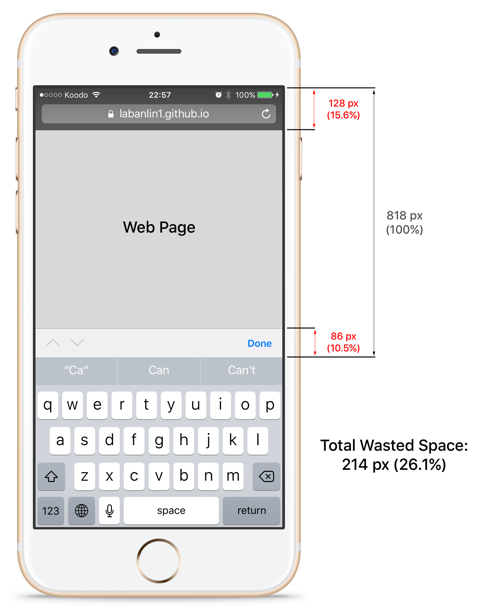

June 2017
Day to Day is a concept I tested to help me communicate with others as I went about day-to-day life while unable to speak. Its core idea is to expedite my ability to type on my phone, which I could use to interact with people if gestures were insufficient.
Templates are automatically searched and filtered as the user types. During the search, alternate interpretations for the same meaning are examined. For example, Can I get the bill? and Can I get the cheque? are functionally identical and are represented by the same template. If the user searches for "bi", the template will show the first option; if the user searches for "ch", the template will show the latter.
Day to Day comes with organized templates. For example, in the Restaurants section, "Can I have some" is a template. Selecting this template adds it to the main text input area, and supplies supporting templates: "water?", "coffee?", "tea?", "Thank you!".
For me, reducing keystrokes was the area Day to Day could bring me the most value. It wasn't strictly a mechanical exercise; typing faster made me feel better. Even though I knew most people were understanding, I still felt like I was wasting peoples' time.
As a result, I made sure to include features to improve my typing time. Some of them were minor and obvious, like using the return key to clear and log the text. Additionally, I made sure templates were easy to remove - a quick tap in the main entry area will remove the template.
But I had to make an interesting decision about the specificity of the templates. Too many templates would be taxing—too many to filter though, and adding marginal value. Too few, and I would have to type too often.
I analyzed three options: generalization, specialization, and singular specialization. Generalization would only include templates that were exceptionally broad, such as "I'd like", "Where is", and "How can I". Specialization is the exact opposite: "I'd like" would be represented by "I'd like to order", "I'd like to find", "I'd like to ask", etc. And singular specialization had just one instance of a special case, such as "I'd like to order".
I went with singular specialization.
This works great in the optimal case: suppose I wanted to type "I'd like to order a side salad." Compared to "I'd like", I save nine keystrokes—a clear winner.
| Template | Additional Typing | Keystroke Delta |
|---|---|---|
| I'd like | to order a side salad | +9 |
| I'd like to order | a side salad | -9 |
But even in the worst case, singular specialization only suffers minor penalties—if you make it easy to remove words.
In Day to Day, the trailing word in a template can be removed by pressing backspace. This dramatically reduces the penalty of specialization to the number of unnecessary words in the template, not letters.
Consider the phrase "I'd like some water". The specialized "I'd like" only costs two more keystrokes than the generic:
| Template | Additional Typing | Keystroke Delta |
|---|---|---|
| I'd like | some water | -2 |
| I'd like to order | del del some water | +2 |
By building Day to Day as a website instead of a native, full-screen iOS application, I lost a sizable chunk of real estate. The status bar, Safari navigation bar, and keyboard helper take up too much space— 26% of the available screen! Had I realized how drastic this was, I would have built this as an iOS application from the start—something for me to keep in mind moving forward.
iOS automatically capitalizes the first letter when an input is selected. This can be annoying; after selecting a template, typically the user expects to input an uncapitalized word. Unfortunately, I believe this level of keyboard manipulation is only available on an iOS native application.